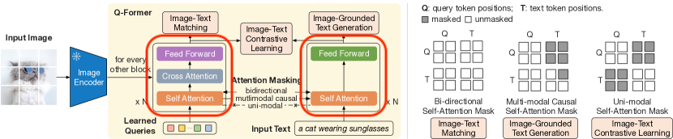
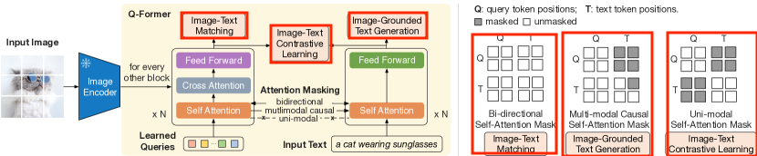
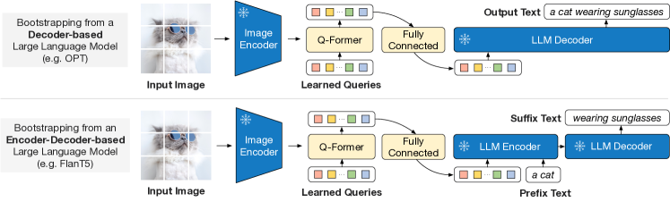

BLIP-2: Bootstrapping Language-Image Pre-training with Frozen Image Encoders and Large Language Models
Paper Link : BLIP-2: Bootstrapping Language-Image Pre-training with Frozen Image Encoders and Large Language Models
Abstract
The cost of vision-and-language pre-training has become increasingly prohibitive due to end-to-end training of large-scale models.
BLIP-2 bridges the modality gap with a lightweight Querying Transformer, which is pre-trained in two stages.
The first stage bootstraps vision-language representation learning from a frozen image encoder.
The second stage bootstraps vision-to-language generative learning from a frozen language model.
BLIP-2 achieves state-of-the-art performance on various vision-language tasks, despite having significantly fewer trainable parameters than existing methods.
Introduction
~~
Method
We propose BLIP-2, a new vision-language pre-training method that bootstraps from frozen pre-trained unimodal models.
In order to bridge the modality gap, we propose a Querying Transformer (Q-Former) pre-trained in two stages: (1) vision-language representation learning stage with a frozen image encoder and (2) vision-to-language generative learning stage with a frozen LLM.
3.1 Model Architecture

We propose Q-Former as the trainable module to bridge the gap between a frozen image encoder and a frozen LLM.
It extracts a fixed number of output features from the image encoder, independent of input image resolution.
As shown in upper Figure, Q-Former consists of two transformer submodules that share the same self-attention layers: (1) an image transformer that interacts with the frozen image encoder for visual feature extraction, (2) a text transformer that can function as both a text encoder and a text decoder.
We create a set number of learnable query embeddings as input to the image transformer.
-> Left of Q-Former box
The queries interact with each other through self-attention layers, and interact with frozen image features through cross-attention layers (inserted every other transformer block).
The queries can additionally interact with the text through the same self-attention layers.
Depending on the pre-training task, we apply different self-attention masks to control query-text interaction.
Q-Former is a simple transformer structure that is utilized to extract information from a frozen image encoder.
In the first step, it is trained to extract text-related information from the image, and in the second step, the extracted information is trained to be interpretable by the LLM. As a result, it is possible to leverage the zero-shot performance of the LLM for VL tasks while gaining the parameter efficiency of frozen large models.
3.2 Bootstrap Vision-Language Representation Learning from a Frozen Image Encoder

In the representation learning stage, we connect Q-Former to a frozen image encoder and perform pre-training using image-text pairs.
We aim to train the Q-Former such that the queries can learn to extract visual representation that is most informative of the text.
Inspired by BLIP, we jointly optimize three pre-training objectives that share the same input format and model parameters.
Image-Text Contrastive Learning (ITC) learns to align image representation and text representation such that their mutual information is maximized.
It achieves so by contrasting the image-text similarity of a positive pair against those of negative pairs.
-> To prevent this, we use the Uni-modal Self-Attention Mask because it would be cheating if images and text referenced each other’s information.
Image-grounded Text Generation (ITG) loss trains the Q-Former to generate texts, given input images as the condition.
-> Utilize a Multi-modal Causal Self-Attention Mask to prevent the query from referencing text information because it would be cheating for the query to preview text information. Also design the self-attention mask so that the text generation task can only reference text before the current point in time.
Image-Text Matching (ITM) aims to learn fine-grained alignment between image and text representation.
It is a binary classification task where the model is asked to predict whether an image-text pair is positive (matched) or negative (unmatched).
-> Since it’s okay to look at all the information we have, we use a Bi-directional Self-Attention Mask.
3.3 Bootstrap Vision-to-Language Generative Learning from a Frozen LLM

In the generative pre-training stage, we connect Q-Former (with the frozen image encoder attached) to a frozen LLM to harvest the LLM’s generative language capability.
As shown in upper Figure, we use a fully-connected (FC) layer to linearly project the output query embeddings Z into the same dimension as the text embedding of the LLM.
The projected query embeddings are then prepended to the input text embeddings.
They function as soft visual prompts that condition the LLM on visual representation extracted by the Q-Former.
Since the Q-Former has been pre-trained to extract language-informative visual representation, it effectively functions as an information bottleneck that feeds the most useful information to the LLM while removing irrelevant visual information.
3.4 Model Pre-training
We use the same pre-training dataset as BLIP
Experiments and Discussions
~~